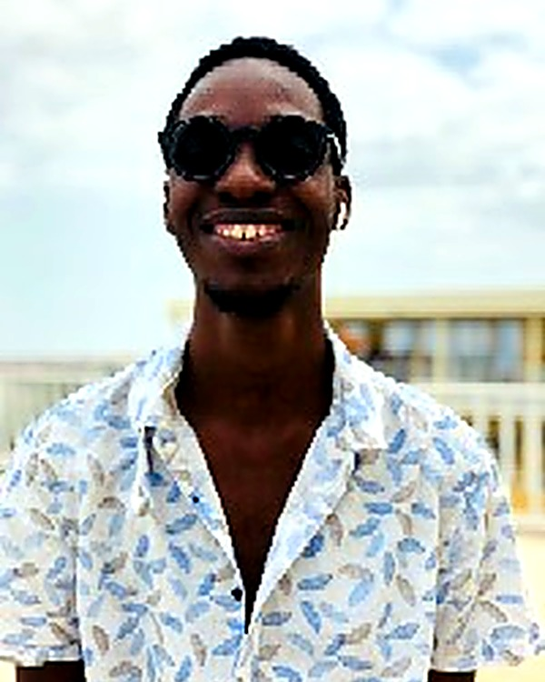

Artista e produtor musical angolano. A música como forma de expressão e verdade — Trap, R&B e ritmos contemporâneos com raízes em Angola.

De Angola para o mundo — uma sonoridade que carrega verdade, emoção e a cena musical que ajuda a construir.
Ayala Dos Reys é artista e produtor musical angolano, apaixonado pela música como forma de expressão e verdade. Com uma sonoridade que transita entre o Trap, o R&B e ritmos contemporâneos, transforma experiências reais em letras profundas, com emoção e autenticidade.
Além de cantor e compositor, actua como engenheiro de som e é fundador da label Tropa Extremamente Dura, contribuindo activamente para o crescimento da nova cena musical angolana.
Para além da carreira a solo, Ayala Dos Reys é fundador da Tropa Extremamente Dura, uma label dedicada a impulsionar novos artistas e a fortalecer a cena musical de Angola — dos bastidores de engenharia de som à direcção criativa de cada projecto.